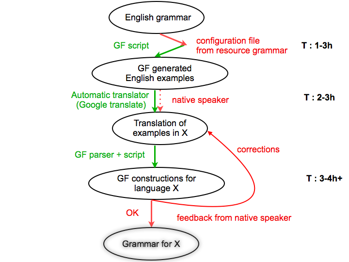

MOLTO Multilingual Phrasebook
Krasimir Angelov, Olga Caprotti, Ramona Enache, Thomas Hallgren, Inari Listenmaa, Aarne Ranta, Jordi Saludes, Adam Slaski
Showcase for project FP7-ICT-247914, Deliverable D10.2.
History
- 2 June. Version 1.0 released!
- 29 May. Link to Google translate with the current language pair and phrase.
- 27 May. Polish added.
- 26 May. Version 0.9:
Catalan added, mass/count noun distinction to reduce overgeneration,
improved web interface.
- 20 May. Version 0.8:
Spanish added, Bulgarian complete.
- 9 May. Version 0.7:
Danish and Norwegian added (preliminary versions induced from statistical models
and resource grammars).
- 3 May. Version 0.6:
Extended API (now final for release), Dutch added; new user interface with text
input enabled.
- 10 April. Some additions in API, comments in implementation; regenerated clones.
- 8 April. Added German.
- 7 April. Added the Clone script, applied to initiate the rest of MOLTO languages.
- 6 April. Version 0.4: weekdays, nationalities
- 30 March. Version 0.3: disambiguation grammar for English
- 28 March. Version 0.2: Swe, Ita; cat Action; small phrases.
- 26 March 2010. Version 0.1: Eng, Fin, Fre, Ron; dedicated minibar UI.
Missing constructs
Back to phrasebook
Purpose
This phrasebook is a program for translating touristic phrases
between 14 European languages included in the
MOLTO project
(Multilingual On-Line Translation):
- Bulgarian, Catalan, Danish, Dutch, English,
Finnish, French, German, Italian, Norwegian,
Polish, Romanian, Spanish, Swedish
It is implemented by using the GF programming language
(Grammatical Framework).
It is the first demo for the MOLTO project, released in the third month (by June 2010).
The first version is a very small system, but it will extended in the course of the project.
The phrasebook has the following requirement specification:
- high quality: reliable translations to express yourself in any language
- translation between all pairs of languages
- runnable in web browsers
- runnable on mobile phones (forthcoming: Android phones)
- easily extensible by new words (forthcoming: semi-automatic extensions by users)
The phrasebook is available as open-source software, licensed under GNU LGPL.
The source code resides in
code.haskell.org/gf/examples/phrasebook/
Points illustrated
Interlingua-based translation
- we translate meanings, rather than words
Incremental parsing
- the user is at every point guided by the list of possible next words
The use of resource grammars and functors
Example-based grammar writing and grammar induction from statistical models
(Google translate)
- many of the grammars were created semi-automatically by generalization from
examples
Compile-time transfer: especially, in Action in Words
- the structural differences between languages are treated at compile time,
for maximal run-time efficiency
Quasi-incremental translation: many basic types are also used as phrases
- one can translate both words and complete sentences, and get intermediate results
Disambiguation, esp. of politeness distinctions
- if a phrase has many translations, each of them is shown and given an explanation
(currently just in English, later in any source language)
Fall-back to statistical translation
- currently just a link to Google translate (forthcoming: tailor-made statistical models)
Feed-back from users
- you are welcome to send comments, bug reports, and better translation suggestions!
The level of skills involved in grammar development
- testing different configurations (see table below)
Grammar testing
- use of treebanks with guided random generation for initial evaluation and regression testing
Ontology
The abstract syntax defines the ontology behind the phrasebook.
Some explanations can be found in the
ontology document, which is produced from the
abstract syntax files
Sentences.gf
and
Words.gf
by make doc.
Files
Sentences: general syntactic structures implementable in a uniform way.
Concrete syntax via the functor SencencesI.
Words: words and predicates, typically language-dependent.
Separate concrete syntaxes.
Greetings: idiomatic phrases, string-based.
Separate concrete syntaxes.
Phrasebook: the top module putting everything together.
Separate concrete syntaxes.
DisambPhrasebook: disambiguation grammars generating feedback phrases if
the input language is ambiguous.
Numeral: resource grammar module directly inherited from the library.
Here is the module structure as produced in GF by
> i -retain DisambPhrasebookEng.gf
> dg -only=Phrasebook*,Sentences*,Words*,Greetings*,DisambPhrasebookEng
> ! dot -Tpng _gfdepgraph.dot >pgraph.png

To Do
Disambiguation grammars for other languages than English
Extend the abstract lexicon in Words by hand or (semi)automatically for
- food stuff
- places
- actions
Customizable phone distribution: make your own selection of the 2^15 language subsets
when downloading the phrasebook to a phone
How to contribute
The basic things "everyone" can do is
- complete missing words in concrete syntaxes
- add new abstract words in
Words and greetings in Greetings
The missing concrete syntax entries are added to the WordsL.gf
files for each language L. The
morphological paradigms
of the GF resource library should be used. Actions (prefixed with A, as AWant) are
a little more demanding, since they also require syntax constructors. Greetings (prefixed
with G) are pure strings.
Some explanations can be found in the
implementation document, which is produced from the
concrete syntax files
SentencesI.gf
and
WordsEng.gf
by make doc.
Here are the steps to follow for contributors:
- Make sure you have the latest sources
from GF Darcs,
using
darcs pull.
- Also make sure that you have compiled the library by
make present in gf/lib/src/.
- Work in the directory
gf/examples/phrasebook/.
- After you've finished your contribution, recompile the phrasebook by
make pgf.
- Save your changes in
darcs record . (in the phrasebook subdirectory).
- Make a patch file with
darcs send -o my_phrasebook_patch, which you can
send to GF maintainers.
- (Recommended:) Test the phrasebook on your local server:
- Go to
gf/src/server/ and follow the instructions in the
project Wiki.
- Make sure that
Phrasebook.pgf is available to you GF server (see project wiki).
- Launch
lighttpd (see project wiki).
- How you can open
gf/examples/phrasebook/www/phrasebook.html and use your phrasebook!
- Don't delete anything! But you are free to correct incorrect forms.
- Don't change the module structure!
- Don't compromise quality to gain coverage: non multa sed multum!
Effort and cost
| Language |
Grammarian's language skills |
Grammarian's GF skills |
Informant used for development |
Informant used for testing |
Use of external tools |
Impact of external tools |
Changes on the resource grammar |
Development time |
| Bulgarian |
### |
### |
- |
- |
- |
? |
# |
## |
| Catalan |
### |
### |
- |
- |
- |
? |
# |
# |
| Danish |
- |
### |
+ |
+ |
+ |
## |
## |
## |
| Dutch |
- |
### |
+ |
+ |
+ |
## |
# |
## |
| English |
## |
### |
- |
+ |
- |
- |
_ |
# |
| Finnish |
### |
### |
- |
- |
- |
? |
# |
## |
| French |
## |
### |
- |
+ |
- |
? |
# |
# |
| German |
# |
### |
+ |
+ |
+ |
## |
## |
### |
| Italian |
### |
# |
- |
- |
- |
? |
## |
## |
| Norwegian |
# |
### |
+ |
- |
+ |
## |
# |
## |
| Polish |
### |
### |
+ |
+ |
+ |
# |
# |
## |
| Romanian |
### |
### |
- |
- |
+ |
# |
### |
### |
| Spanish |
## |
# |
- |
- |
- |
? |
_ |
## |
| Swedish |
## |
### |
- |
+ |
- |
? |
- |
## |
Explanation on scores
- Grammarian's language skills
- - : no skills
- # : passive knowledge
- ## : fluent non-native
- ### : native speaker
- Grammarian's GF skills
- - : no skills
- # : basic skills (2-day GF tutorial)
- ## : medium skills (previous experience of similar task)
- ### : advanced skills (resource grammar writer/substantial contributor)
- Informant used for development/Informant needed for testing/Use of external tools
- Impact of external tools
- ? : not investigated
- - : no effect on the Phrasebook
- # : small impact (literal translation, simple idioms)
- ## : medium effect (translation of more forms of words, contextual preposition)
- ### : great effect (no extra work needed, translations are correct)
- Changes on the resource grammars
- - : no changes
- # : 1-3 minor changes
- ## : 4-10 minor changes, 1-3 medium changes
- ### : >10 changes of any kind
- Overall effort (including extra work on resource grammars)
- # : less than 8 person hours
- ## : 8-24 person hours
- ### : >24 person hours
Example-based grammar writing prototype
The figure presents the process of creating a Phrasebook using an example-based
approach for the language X, where X = {Danish, Dutch, German, Norwegian}.

- the first step assumes an analysis of the resource grammar and extracts the necessary
information that functions that build new lexical entries would need.
A model is built so that the proper forms of the word can be rendered,
and additional information, such as gender, can be inferred. The script applies
these rules to each entry that we want to translate into the target language, and
one obtains a set of constructions.
- they are furthermore given to an external translator tool (Google translate)
or a native speaker for translation. One needs the configuration file even if the
translator is human, because formal knowledge of grammar is not assumed.
- the translations into the target language are further more processed in order to
build the linearizations of the categories first, decoding the information received.
Furthermore, having the words in the lexicon, one can parse the translations of
functions with the GF parser and generalize from that.
- the resulting grammar is tested with the aid of a script that generates
constructions covering all the functions and categories from the grammar, along
with some other constructions that proved to be problematic in some language.
The result of the script contains for each construction in the target language
its English correspondent and the abstract syntax tree. A native speaker
evaluates the results and if corrections are needed, the algorithm runs again
with the new examples. Depending on the language skills of the grammar writer,
the changes can be made directly into the GF files, and the correct examples
given by the native informant are just kept for validating the results.
The algorithm is repeated as long as corrections are needed.
The time needed for preparing the configuration files for a grammar will not be needed
in the future, since the files are reusable for other applications.
The time for the second step can be saved if automatic tools, like Google translate
are used. This is only possible in languages with a simpler morphology and syntax
and large corpora available.
Good results were obtained for German and Dutch with Google translate, but for
languages like Romanian or Polish, which are both complex and lack enough resources,
the results are discouraging.
If the statistical oracle works well, the only step where the presence of a human
translator is needed is the evaluation and feedback step. An average of 4 hours per
round and 2 rounds were needed in average for the languages for which we performed
the experiment. It is possible that more effort is needed for more complex languages.
Conclusions (tentative)
The grammarian need not be a native speaker of the language.
For many languages, the grammarian need not even know the language - native informants are
enough.
However, evaluation by native speakers is necessary.
Correct and idiomatic translations are possible.
A typical development time was 2-3 person working days per language.
Google translate helps in bootstrapping grammars, but must be checked.
- in particular, unreliable for morphologically rich languages
Resource grammars should give some more support
- higher-level access to constructions like negative expressions
- large-scale morphological lexica
Acknowledgements
The Phrasebook has been built in the MOLTO project funded by the European Commission.
The authors are grateful to their native speaker informants helping to bootstrap and evaluate
the grammars:
Richard Bubel,
Grégoire Détrez,
Karin Keijzer,
Michał Pałka,
Willard Rafnsson,
Nick Smallbone.